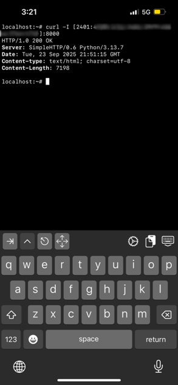

Open ports on local ipv6 devices to the internet
I remember the days when I used to play with metasploit reverse_tcp but would never be able to get
a connection while on the internet. I worked, but always on the local network.
I later realized, the reason was CGNAT. My ISP never routed any open ports on my public IP.
The world moved forward and IPv6 adoption increased. Now, both Airtel and Jio support IPv6.
It is now easier than ever to expose local ports to the internet.
-
Test if ipv6 is working
; curl -6 ipv6.google.com -
Listen on the ipv6 interface. On python, you could do:
; python3 -m http.server --bind :: Serving HTTP on :: port 8000 (http://[::]:8000/) ... -
; curl -6 https://ifconfig.co 2401:4900:xxxx:xxxx:xxxx:xxxx:xxxx:xxxx -
Allow ipv6 incoming connections on the router firewall.
For this, gotohttp://192.168.1.1/-> login -> security -> firewall then setPERMIT.
It’ll look like this:IPv6 DEFAULTWANv6 ppp111 In Permitppp111 refers to your WAN interface and br0 is your local bridge interface (192.168.x.x)
-
From a different device - far far away on the internet:
curl [2401:4900:xxxx:xxxx:xxxx:xxxx:xxxx:xxxx]:8000Enjoy !
It connects perfectly from my Jio 5G.
